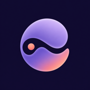

ND HapticOffline haptic rhythms powered by your phone's built-in motor.
On Home, choose a pattern, adjust intensity, tempo and duration, then tap Start. Sessions run for 1, 3, 5, 10 or 15 minutes; there is no unlimited mode.
Haptic motors and system capabilities vary by device. Devices with fine amplitude control offer relative intensity levels 1–10; other devices use light, medium and strong. These levels are relative, not physical measurements.
Go to Settings → Recalibrate to repeat the light, medium and high calibration. Calibration is saved for this device; after reinstalling or switching devices, you will be asked to calibrate again.
The app and all built-in patterns are free. A one-time purchase (Lifetime access) unlocks creating and editing custom patterns. There is no subscription or auto-renewal.
Open Settings → Membership → Restore Purchases and use the same Apple Account. Purchases are verified with the App Store through StoreKit. Custom patterns are stored on your device, so restoring a purchase does not bring back deleted patterns.
Make sure your device supports haptics and that system haptics are on. Go to Settings → Recheck Device, then try a higher intensity. The iOS Simulator never produces real haptics.
For safety, output stops when the app moves to the background, the screen locks, or the system interrupts it (for example, an incoming call). It does not resume automatically; tap Start again when you are ready.
Go to Settings → Clear Local Data. This deletes settings, calibration, favorites, custom patterns and history, then reopens onboarding. You can also turn off Save Session History.
ND Haptic is a haptic rhythm tool, not a medical or professional massage device. Stop right away if your phone gets noticeably warm, makes unusual noises, or you feel discomfort.
See our Privacy Policy for details on what data ND Haptic does (and does not) handle.
在首页选择模式，调整强度、节奏和时长，然后点按“开始”。时长可选 1、3、5、10 或 15 分钟，不提供无限运行。
不同设备的马达与系统能力不同。支持精细振幅的设备提供 1–10 级相对强度，其他设备使用轻、中、强三档。这些等级都是相对值，不是物理测量值。
进入“设置 → 重新校准”，重新完成轻、中、高三档校准。校准结果保存在当前设备；重新安装或更换设备后需要再次校准。
App 和所有内置模式均可免费使用。一次购买（永久解锁）即可创建和编辑自定义模式，无订阅、无自动续费。
打开“设置 → 会员 → 恢复购买”，并使用同一 Apple 账户。购买状态会通过 StoreKit 向 App Store 核实。自定义模式保存在本机，恢复购买不会找回已删除的模式。
请确认设备支持触觉，且系统触感反馈已开启。进入“设置 → 重新检测设备”，然后尝试提高强度。iOS 模拟器不会产生真实触觉。
出于安全考虑，应用进入后台、设备锁屏或发生系统中断（例如来电）时会停止输出，且不会自动恢复。准备好后请重新点按“开始”。
进入“设置 → 清除本地数据”，即可删除设置、校准、收藏、自定义模式和使用历史，并重新打开首次引导。你也可以关闭“保存会话记录”。
ND Haptic 是触觉节奏工具，不是医疗设备或专业按摩设备。手机明显发热、出现异常声音或身体感到不适时，请立即停止。
数据处理方式详见隐私政策。
在首頁選擇模式，調整強度、節奏和時長，然後點一下「開始」。時長可選 1、3、5、10 或 15 分鐘，不提供無限執行。
不同裝置的馬達與系統能力不同。支援精細振幅的裝置提供 1–10 級相對強度，其他裝置使用輕、中、強三檔。這些等級都是相對值，不是物理測量值。
前往「設定 → 重新校正」，重新完成輕、中、高三檔校正。校正結果儲存在目前裝置；重新安裝或更換裝置後需要再次校正。
App 和所有內建模式均可免費使用。一次購買（永久解鎖）即可建立和編輯自訂模式，無訂閱、無自動續費。
開啟「設定 → 會員 → 恢復購買」，並使用同一個 Apple 帳號。購買狀態會透過 StoreKit 向 App Store 驗證。自訂模式儲存在本機，恢復購買不會找回已刪除的模式。
請確認裝置支援觸覺，且系統觸覺回饋已開啟。前往「設定 → 重新偵測裝置」，然後嘗試提高強度。iOS 模擬器不會產生真實觸覺。
基於安全考量，App 進入背景、裝置鎖定或發生系統中斷（例如來電）時會停止輸出，且不會自動恢復。準備好後請再點一下「開始」。
前往「設定 → 清除本機資料」，即可刪除設定、校正、收藏、自訂模式和使用記錄，並重新開啟首次導覽。你也可以關閉「儲存工作階段記錄」。
ND Haptic 是觸覺節奏工具，不是醫療裝置或專業按摩裝置。手機明顯發熱、出現異常聲音或身體感到不適時，請立即停止。
請參閱 隱私權政策，了解 ND Haptic 處理及不處理哪些資料。
홈에서 패턴을 선택하고 강도, 빠르기, 시간을 조절한 다음 시작을 탭하세요. 시간은 1, 3, 5, 10, 15분 중에서 선택할 수 있으며 무제한 실행은 제공하지 않습니다.
기기마다 햅틱 모터와 시스템 기능이 다릅니다. 세밀한 진폭 제어를 지원하는 기기는 1–10단계 상대 강도를, 그 외 기기는 약·중·강 세 단계를 사용합니다. 이 단계는 상대적인 값이며 물리적 측정값이 아닙니다.
설정 → 재보정으로 이동해 약·중·강 보정을 다시 진행하세요. 보정 결과는 현재 기기에 저장되며, 앱을 다시 설치하거나 기기를 바꾸면 다시 보정해야 합니다.
앱과 모든 기본 패턴은 무료입니다. 일회성 구매(평생 이용)로 사용자 패턴을 만들고 편집할 수 있습니다. 구독이나 자동 갱신은 없습니다.
설정 → 멤버십 → 구매 복원으로 이동해 같은 Apple 계정을 사용하세요. 구매 내역은 StoreKit을 통해 App Store에서 확인합니다. 사용자 패턴은 기기에 저장되므로 구매를 복원해도 삭제한 패턴은 돌아오지 않습니다.
기기가 햅틱을 지원하는지, 시스템 햅틱이 켜져 있는지 확인하세요. 설정 → 기기 다시 감지로 이동한 후 강도를 높여 보세요. iOS 시뮬레이터에서는 실제 햅틱이 출력되지 않습니다.
안전을 위해 앱이 백그라운드로 이동하거나, 화면이 잠기거나, 시스템 중단(예: 전화 수신)이 발생하면 출력이 멈추며 자동으로 다시 시작되지 않습니다. 준비되면 시작을 다시 탭하세요.
설정 → 로컬 데이터 지우기로 이동하면 설정, 보정, 즐겨찾기, 사용자 패턴, 기록이 삭제되고 온보딩이 다시 열립니다. 세션 기록 저장을 끌 수도 있습니다.
ND Haptic은 햅틱 리듬 도구이며 의료 기기나 전문 마사지 기기가 아닙니다. 휴대폰이 눈에 띄게 뜨거워지거나, 이상한 소리가 나거나, 불편함이 느껴지면 즉시 중지하세요.
ND Haptic의 데이터 처리 방식에 대한 자세한 내용은 개인정보 처리방침을 확인하세요.
ホームでパターンを選び、強さ、テンポ、時間を調整してから「開始」をタップします。時間は 1、3、5、10、15 分から選べます。無制限の実行はありません。
触覚モーターとシステムの機能はデバイスによって異なります。細かな振幅制御に対応したデバイスでは 1〜10 の相対的な強さを、それ以外のデバイスでは弱・中・強の 3 段階を使用します。これらは相対値であり、物理的な測定値ではありません。
「設定 → 再調整」に進み、弱・中・強の調整をもう一度行います。調整結果はこのデバイスに保存されます。再インストールやデバイスの変更後は、再度調整が必要です。
アプリとすべての内蔵パターンは無料で使えます。一度の購入（永続利用）で、カスタムパターンの作成と編集ができるようになります。サブスクリプションや自動更新はありません。
「設定 → メンバーシップ → 購入を復元」を開き、同じ Apple アカウントを使用してください。購入状況は StoreKit を通じて App Store に確認されます。カスタムパターンはデバイスに保存されるため、購入を復元しても削除したパターンは戻りません。
デバイスが触覚に対応していること、システムの触覚フィードバックがオンになっていることを確認してください。「設定 → デバイスを再検出」に進み、強さを上げてお試しください。iOS シミュレータでは実際の触覚は出力されません。
安全のため、アプリがバックグラウンドに移ったとき、画面がロックされたとき、またはシステムによる中断（着信など）があったときは出力を停止し、自動では再開しません。準備ができたら、もう一度「開始」をタップしてください。
「設定 → ローカルデータを消去」に進むと、設定、調整、お気に入り、カスタムパターン、履歴が削除され、初回ガイドが再び表示されます。「セッション履歴を保存」をオフにすることもできます。
ND Haptic は触覚リズムのツールであり、医療機器や専門的なマッサージ機器ではありません。スマートフォンが著しく熱くなった場合、異音がする場合、または体に不快感がある場合は、すぐに使用を中止してください。
ND Haptic が扱うデータや扱わないデータの詳細は、プライバシーポリシーをご確認ください。